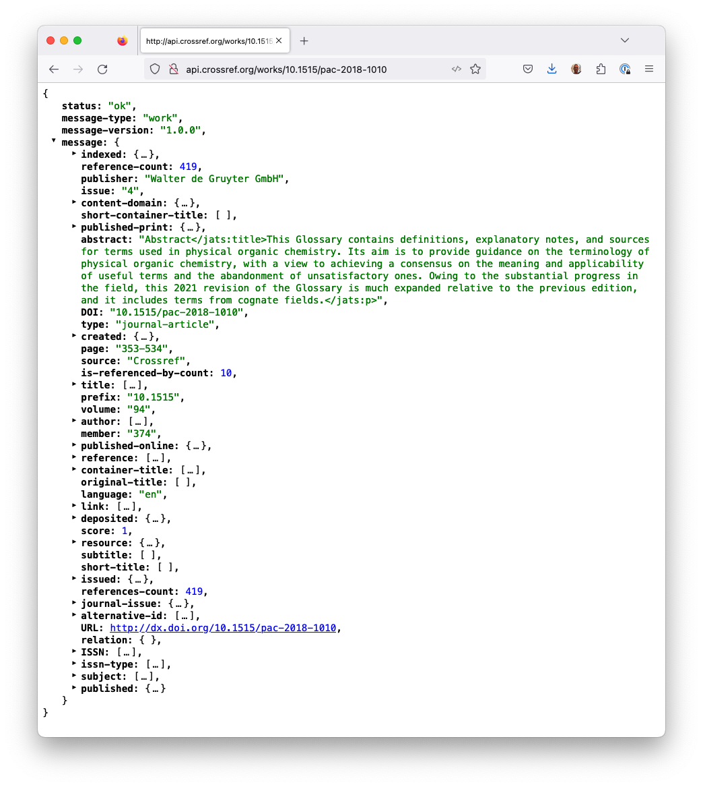
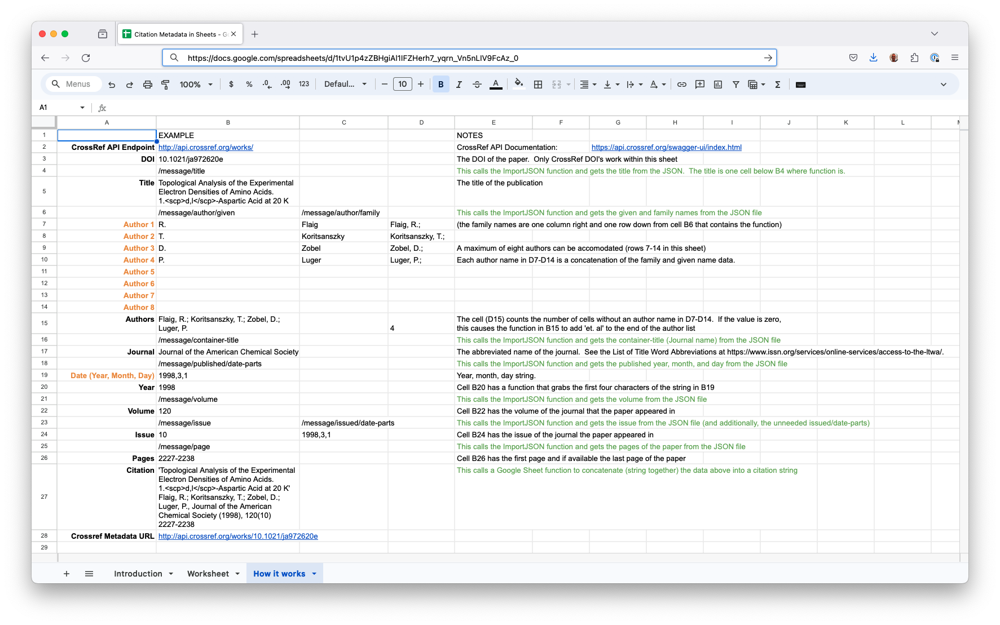

Importing JSON Citation Data from an API into Google Sheets#
About this recipe
Author: Stuart Chalk
Topics: Data Importing, Google Sheets, Citation data
Format: Markdown file, Google Sheets file
Skills: You should be familiar with
Learning outcomes: After completing this example you should understand:
Options to import data into Google Sheets
Understand how to configure the Google Sheets document to import .json files
Usage of the ImportJSON Apps Script
Citation: ‘Importing JSON Citation Data from an API into Google Sheets’, Stuart Chalk, The IUPAC FAIR Chemistry Cookbook, Contributed: 2024-02-14 https://w3id.org/ifcc/IFCC015.
Reuse: This notebook is made available under a CC-BY-4.0 license.
Summary#
In many research contexts, access to the literature is very important and dealing with its metadata can be time-consuming. The advent of the Digital Object Identifier (DOI) has made it much easier to deal with citation data for many different types of digital resources. Currently, twelve registration agencies are ‘minting’ (creating) DOI’s and each has a different scope and size. From a research literature perspective CrossRef is the agency that holds DOI’s (now ~150,000,000) and that is a lot of data to sort through.
This tutorial therefore focuses on understanding how you can pull in citation metadata from the CrossRef API, and load it in a Google Sheet, to make it easy (for instance) to create a citation string for a paper. An example of a sheet that does this is available here, and you can make a copy and play around with it. Exploring what it takes to put the data into the document is a great way to understand the CrossRef schema, the structure of how the data is provided.
1 Accessing the CrossRef API#
The CrossRef API makes metadata available about journal papers, books and other publication types. Detailed documentation of the API is available at main URL endpoint, https://api.crossref.org. This is too big to go over in this tutorial, so we will just be focusing on the ‘works’ endpoint (a partial URL that you can add a DOI to) - in this case https://api.crossref.org/works/. If you append a DOI to this partial URL and put it in a browser you will get a JSON file returned (see below). The JSON file in the image is formatted using the JSONView plugin for Firefox and all the fields have been collapsed to make it easy to see the whole file at http://api.crossref.org/works/10.1515/pac-2018-1010.
 Caption: JSON output from the Crossref API
The data we need to extract to be able to create a citation for this paper is spread throughoout different parts of the JSON file, so we need to know how to get to these metadata elements. You can think about accessing information in the JSON file by using the concept of ‘paths’ to the data elements (just like accessing files in a computer). In this case the data we need are at the following paths:
title: /message/title
author last names: /message/author/given (for each author)
author first names: /message/author/family (for each author)
journal: /message/container-title (alternatively if you want the journal abbreviation you can use /message/short-container-title if available)
year: /message/published/date-parts (index 0 in the JSON array)
volume: /message/volume
issue: /message/issue
pages: /message/page (yes singular)
Note
Looking at this you will see that while the data is available, it is not as logically organized as it could be and there are some formatting issues (for instance the abstract). This is a consequence of both the CrossRef schema for the JSON output, and the approach to populating the metadata of the publisher. With the focus on open citations in the research community I hope that this will soon be addressed.
2 Getting and formatting the citation string#
In order to create our citation string on the Google sheet we need to implement a call to the CrossRef URL, for the paper retrieval of these metadata fields and some organization and formating. This is implemented in the Google sheet in each column, and much of the mechanics is hidden in rows between the showing data. This is all explained in the ‘How it works’ sheet.
 Caption: The Google Sheets ‘How It Works’ sheet
Let’s walk through the code. The Crossref path is in cell B2 and the DOI is added to cell B3. The full path is created in the Google Sheet function ‘CONCAT’. Here is an example call to get the data.
=ImportJSON(CONCATENATE('How it works'!$B$2,B3),"/message/title","noInherit,noTruncate,rawHeaders")
The Google Sheet ‘ImportJSON’ addon function takes a URL (first variable) and a path to data (second variable) and optionally so processing options (third variable). When the Google sheet processes this function the data at the path is put into the cell below the function. This works easily for the title, journal name, volume, issue and pages.
In order to process the authors and the year we have to do a little more. For the authors, the data is a JSON array and thus has to be organized to subsequently be able to be put back together as a string. This is done by loading the data (up to eight authors) into columns B and C, concatenating these in column D and finally concatenating non-empty cells in B15. This can be expanded to more authors by adding more space for authors and updating the code to cover all the author data.
For the year, as there is no ‘year’ field, we need to take the publised data parts (year, month, day) as a comma separated string (B19) and then get the first four characters of that string to get the year. It would be easier if the ‘path’ could point to specific elements in the array (i.e. /message/published/date-parts/0), but this does not work.
Finally, our goal of a citation string is implemented in B27, by concatenating the fields above with some extra formatting. In the ‘Worksheet’ sheet all the mechanics are hidden and all that is needed is to add a DOI of a paper in each/any of B2, C2, or D2 (you can copy any of the B,C or D columns across to other columns to process) metadata for more files.
3 Conclusion#
In this brief tutorial you can see how Google Sheets and the ImportJSON addon allows you to process any API data. Given this example, you can create spreadsheet views fo API data and even integrate data from multiple sources. The only thing to be aware of is that the more calls to APIs that you make in one sheet the slower the over all sheet will work, but this of course depends on your access speed, so you may need to optimize how you import the data.